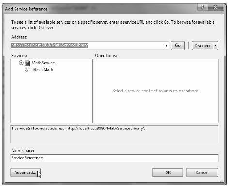
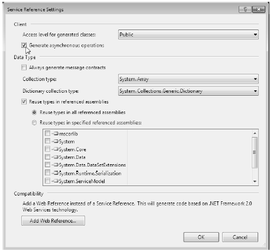

Create a new Console Application named MathClient and set a Service Reference to your running WCF service (that is current hosted by the Windows service running in the background) using the Add Service Reference option of Visual Studio (you’ll need to type the URL in the Addresses box). Don’t click the OK button yet, however! Notice that the Add Service Reference dialog box has an Advanced button in the lower-left corner (see Figure 25-17).
Figure 25-17 Referencing your MathService and getting ready to configure advanced settings
Click this button now to view the additional proxy configuration settings (see Figure 25-18). You can use this dialog box to generate code that allows you to call the remote methods in an asynchronous manner, provided you check the Generate Asynchronous Operators check box. Go ahead and check this option for the time being.
Figure 25-18 Advanced client-side proxy configuration options
At this point, the proxy code contains additional methods that allow you to invoke each member of the service contract using the expected Begin/End asynchronous invocation pattern described in Chapter 19. Here is a simple implementation that uses a lambda expression rather than a strongly typed AsyncCallback delegate:
using System; using MathClient.ServiceReference; using System.Threading; namespace MathClient { class Program { static void Main(string[] args) { Console.WriteLine("***** The Async Math Client *****\n"); using (BasicMathClient proxy = new BasicMathClient()) { proxy.Open(); // Add numbers in an async manner, using a lambda expression. IAsyncResult result = proxy.BeginAdd(2, 3, ar => { Console.WriteLine("2 + 5 = {0}", proxy.EndAdd(ar)); }, null); while (!result.IsCompleted) { Thread.Sleep(200); Console.WriteLine("Client working..."); } } Console.ReadLine(); } } }